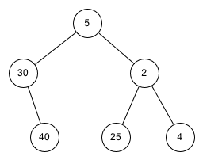

6.14. Implementación de un árbol de búsqueda¶
Un árbol binario de búsqueda (abb) se basa en la propiedad de que las claves que son menores que el padre se encuentran en el subárbol izquierdo, y las claves que son mayores que el padre se encuentran en el subárbol derecho. Llamaremos esto la propiedad abb. A medida que implementemos la interfaz de Vector Asociativo como se describió anteriormente, la propiedad abb guiará nuestra implementación. La Figura 1 ilustra esta propiedad de un árbol binario de búsqueda, mostrando las claves sin ningún valor asociado. Observe que la propiedad es válida para cada padre e hijo. Todas las claves del subárbol izquierdo son menores que la clave de la raíz. Todas las claves en el subárbol derecho son mayores que la raíz.

Figura 1: Un árbol binario de búsqueda simple
Ahora que usted ya sabe lo que es un árbol binario de búsqueda, veremos cómo se construye. El árbol de búsqueda de la Figura 1 representa los nodos que existen después de haber insertado las siguientes claves en el orden mostrado: \(70,31,93,94,14,23,73\). Dado que 70 fue la primera clave insertada en el árbol, es la raíz. A continuación, 31 es menor que 70, por lo que se convierte en el hijo izquierdo de 70. Luego, 93 es mayor que 70, por lo que se convierte en el hijo derecho de 70. Ahora tenemos dos niveles del árbol llenos, así que la siguiente clave va a ser el hijo izquierdo o derecho de 31 o 93. Dado que 94 es mayor que 70 y 93, se convierte en el hijo derecho de 93. Similarmente 14 es menor que 70 y 31, por lo que se convierte en el hijo izquierdo de 31. 23 es también menor que 31, por lo que debe estar en el subárbol izquierdo de 31. Sin embargo, es mayor que 14, por lo que se convierte en el hijo derecho de 14.
Para implementar el árbol binario de búsqueda, utilizaremos un enfoque de nodos y referencias similar al que utilizamos para implementar la lista enlazada y el árbol de expresiones. Sin embargo, puesto que debemos ser capaces de crear y trabajar con un árbol binario de búsqueda que esté vacío, nuestra implementación utilizará dos clases. A la primera clase la llamaremos ArbolBinarioBusqueda y a la segunda clase la llamaremos NodoArbol. La clase ArbolBinarioBusqueda tiene una referencia a NodoArbol que es la raíz del árbol binario de búsqueda. En la mayoría de los casos, los métodos externos definidos en la clase externa simplemente comprueban si el árbol está vacío. Si hay nodos en el árbol, la petición simplemente se pasa a un método privado definido en la clase ArbolBinarioBusqueda que recibe la raíz como parámetro. En caso que el árbol esté vacío o queramos borrar la clave en la raíz del árbol, debemos tomar medidas especiales. El código para el constructor de la clase ArbolBinarioBusqueda junto con algunas otras funciones misceláneas se muestra en el Programa 1.
Programa 1
class ArbolBinarioBusqueda:
def __init__(self):
self.raiz = None
self.tamano = 0
def longitud(self):
return self.tamano
def __len__(self):
return self.tamano
def __iter__(self):
return self.raiz.__iter__()
La clase NodoArbol proporciona muchas funciones auxiliares que hacen que el trabajo realizado en los métodos de la clase ArbolBinarioBusqueda sea mucho más fácil. El constructor de un NodoArbol, junto con estas funciones auxiliares, se muestra en el Programa 2. Como se puede ver en el programa, muchas de estas funciones auxiliares ayudan a clasificar un nodo según su propia posición como hijo, (izquierdo o derecho) y el tipo de hijos que tiene el nodo. La clase NodoArbol también mantendrá explícitamente un seguimiento del padre como un atributo de cada nodo. Usted verá por qué esto es importante cuando discutamos la implementación del operador del.
Otro aspecto interesante de la implementación de NodoArbol en el Programa 2 es que usamos parámetros opcionales de Python. Los parámetros opcionales facilitan la creación de un NodoArbol bajo diferentes circunstancias. A veces queremos construir un nuevo NodoArbol que ya tenga padre e hijo. Con un padre y un hijo existentes, podemos pasar padres e hijos como parámetros. En otras ocasiones, simplemente crearemos un NodoArbol con la pareja clave-valor, y no pasaremos ningún parámetro padre o hijo. En este caso, se utilizan los valores por defecto de los parámetros opcionales.
Programa 2
class NodoArbol:
def __init__(self,clave,valor,izquierdo=None,derecho=None,
padre=None):
self.clave = clave
self.cargaUtil = valor
self.hijoIzquierdo = izquierdo
self.hijoDerecho = derecho
self.padre = padre
def tieneHijoIzquierdo(self):
return self.hijoIzquierdo
def tieneHijoDerecho(self):
return self.hijoDerecho
def esHijoIzquierdo(self):
return self.padre and self.padre.hijoIzquierdo == self
def esHijoDerecho(self):
return self.padre and self.padre.hijoDerecho == self
def esRaiz(self):
return not self.padre
def esHoja(self):
return not (self.hijoDerecho or self.hijoIzquierdo)
def tieneAlgunHijo(self):
return self.hijoDerecho or self.hijoIzquierdo
def tieneAmbosHijos(self):
return self.hijoDerecho and self.hijoIzquierdo
def reemplazarDatoDeNodo(self,clave,valor,hizq,hder):
self.clave = clave
self.cargaUtil = valor
self.hijoIzquierdo = hizq
self.hijoDerecho = hder
if self.tieneHijoIzquierdo():
self.hijoIzquierdo.padre = self
if self.tieneHijoDerecho():
self.hijoDerecho.padre = self
Ahora que tenemos el armazón de ArbolBinarioBusqueda y la clase NodoArbol, es hora de escribir el método agregar que nos permitirá construir nuestro árbol binario de búsqueda. El método agregar es un método de la clase ArbolBinarioBusqueda. Este método comprobará si el árbol ya tiene una raíz. Si no hay una raíz entonces agregar creará un nuevo NodoArbol y lo instalará como la raíz del árbol. Si ya existe un nodo raíz, entonces agregar llama a la función auxiliar, privada y recursiva, _agregar para buscar en el árbol de acuerdo con el siguiente algoritmo:
- Comenzando en la raíz del árbol, buscar en el árbol binario comparando la nueva clave con la clave del nodo actual. Si la nueva clave es menor que el nodo actual, buscar en el subárbol izquierdo. Si la nueva clave es mayor que el nodo actual, buscar en el subárbol derecho.
- Cuando no hay hijo izquierdo (o derecho) para buscar, hemos encontrado la posición en el árbol donde se debe instalar el nuevo nodo.
- Para agregar un nodo al árbol, crear un nuevo objeto
NodoArbole insertar el objeto en el punto descubierto en el paso anterior.
El Programa 3 muestra el código en Python para insertar un nuevo nodo en el árbol. La función _agregar se escribe recursivamente siguiendo los pasos descritos anteriormente. Note que cuando se inserta un nuevo hijo en el árbol, el nodoActual se pasa al nuevo árbol como padre.
Un problema importante con nuestra implementación de insertar es que las claves duplicadas no se manejan correctamente. A medida que se implementa nuestro árbol, una clave duplicada creará un nuevo nodo con el mismo valor clave en el subárbol derecho del nodo que tenga la clave original. El resultado de esto es que el nodo con la nueva clave nunca será encontrado durante una búsqueda. Una mejor manera de manejar la inserción de una clave duplicada es que el valor asociado con la nueva clave reemplace al valor antiguo. Dejamos que usted arregle este error como ejercicio.
Programa 3
def agregar(self,clave,valor):
if self.raiz:
self._agregar(clave,valor,self.raiz)
else:
self.raiz = NodoArbol(clave,valor)
self.tamano = self.tamano + 1
def _agregar(self,clave,valor,nodoActual):
if clave < nodoActual.clave:
if nodoActual.tieneHijoIzquierdo():
self._agregar(clave,valor,nodoActual.hijoIzquierdo)
else:
nodoActual.hijoIzquierdo = NodoArbol(clave,valor,padre=nodoActual)
else:
if nodoActual.tieneHijoDerecho():
self._agregar(clave,valor,nodoActual.hijoDerecho)
else:
nodoActual.hijoDerecho = NodoArbol(clave,valor,padre=nodoActual)
Con el método agregar definido, podemos sobrecargar fácilmente el operador [] para asignación gracias a que hacemos que el método __setitem__ (ver Programa 4) llame al método agregar. Esto nos permite escribir instrucciones con el estilo de Python como miArbolCodigosPostales['Plymouth'] = 55446, tal como un diccionario de Python.
Programa 4
def __setitem__(self,c,v):
self.agregar(c,v)
La Figura 2 ilustra el proceso para insertar un nuevo nodo en un árbol binario de búsqueda. Los nodos ligeramente sombreados indican los nodos que fueron visitados durante el proceso de inserción.
Figura 2: Inserción de un nodo con clave = 19
Autoevaluación
-
Q-1: ¿Cuál de los siguientes árboles muestra un árbol binario de búsqueda correcto dado que las claves fueron insertadas en el siguiente orden 5, 30, 2, 40, 25, 4?
- 
- Recuerde que, a partir de la raíz, las claves menores que la raíz deben estar en el subárbol izquierdo, mientras que las claves mayores que la raíz van en el subárbol derecho.

- Bien hecho.

- Este árbol luce como un árbol binario que satisface la propiedad de árbol completo que es necesaria para un montículo.
Una vez que el árbol está construido, la siguiente tarea es implementar la consulta de un valor para una clave dada. El método obtener es aún más fácil que el método agregar porque simplemente busca el árbol de forma recursiva hasta que llega a un nodo hoja no coincidente o encuentra una clave coincidente. Cuando se encuentra una clave coincidente, se devuelve el valor almacenado en la carga útil del nodo.
El Programa 5 muestra el código de obtener, _obtener y __getitem__. El código de búsqueda del método _obtener utiliza la misma lógica para elegir el hijo izquierdo o el derecho que el método _agregar. Note que el método _obtener devuelve un NodoArbol a obtener, esto permite que _obtener sea usado como un método flexible de ayuda para otros métodos de ArbolBinarioBusqueda que puedan necesitar hacer uso de otros datos de NodoArbol además de la carga útil.
Al implementar el método __getitem__ podemos escribir una instrucción de Python que se vea como si accediéramos a un diccionario, cuando de hecho estamos utilizando un árbol de búsqueda binario, por ejemplo z = miArbolCodigosPostales['Fargo'] . Como se puede ver, todo lo que hace el método __getitem__ es llamar a obtener.
Programa 5
def obtener(self,clave):
if self.raiz:
res = self._obtener(clave,self.raiz)
if res:
return res.cargaUtil
else:
return None
else:
return None
def _obtener(self,clave,nodoActual):
if not nodoActual:
return None
elif nodoActual.clave == clave:
return nodoActual
elif clave < nodoActual.clave:
return self._obtener(clave,nodoActual.hijoIzquierdo)
else:
return self._obtener(clave,nodoActual.hijoDerecho)
def __getitem__(self,clave):
return self.obtener(clave)
Utilizando obtener, podemos implementar la operación in escribiendo un método __contains__ para ArbolBinarioBusqueda. El método __contains__ llamará simplemente a obtener y devolverá True si obtener devuelve un valor o False si devuelve None. El código para __contains__ se muestra en el Programa 6.
Programa 6
def __contains__(self,clave):
if self._obtener(clave,self.raiz):
return True
else:
return False
Recuerde que __contains__ sobrecarga el operador in y nos permite escribir instrucciones como:
if 'Northfield' in miArbolCodigosPostales:
print("Sí está en el árbol")
Por último, fijémonos en el método más difícil en el árbol binario de búsqueda, la eliminación de una clave (ver el Programa 7). La primera tarea es encontrar el nodo que se va a eliminar buscándolo en el árbol. Si el árbol tiene más de un nodo, buscamos usando el método _obtener para encontrar el NodoArbol que debe ser eliminado. Si el árbol tiene un solo nodo, significa que estamos eliminando la raíz del árbol, pero debemos comprobar que la clave de la raíz coincida con la clave que se va a eliminar. En cualquier caso, si no se encuentra la clave, el operador del genera un error.
Programa 7
def eliminar(self,clave):
if self.tamano > 1:
nodoAEliminar = self._obtener(clave,self.raiz)
if nodoAEliminar:
self.remover(nodoAEliminar)
self.tamano = self.tamano-1
else:
raise KeyError('Error, la clave no está en el árbol')
elif self.tamano == 1 and self.raiz.clave == clave:
self.raiz = None
self.tamano = self.tamano - 1
else:
raise KeyError('Error, la clave no está en el árbol')
def __delitem__(self,clave):
self.eliminar(clave)
Una vez que hemos encontrado el nodo que contiene la clave que queremos eliminar, hay tres casos que debemos considerar:
- El nodo a eliminar no tiene hijos (ver la Figura 3).
- El nodo a eliminar tiene un solo hijo (ver la Figura 4).
- El nodo a eliminar tiene dos hijos (ver la Figura 5).
El primer caso es sencillo (ver el Programa 8). Si el nodo actual no tiene hijos, todo lo que debemos hacer es borrar el nodo y eliminar la referencia a ese nodo en el padre. El código para este caso se muestra a continuación.
Programa 8
if nodoActual.esHoja():
if nodoActual == nodoActual.padre.hijoIzquierdo:
nodoActual.padre.hijoIzquierdo = None
else:
nodoActual.padre.hijoDerecho = None

Figura 3: Eliminación del nodo 16, un nodo sin hijos
El segundo caso es sólo un poco más complicado (vea el Programa 9). Si un nodo tiene un solo hijo, entonces podemos simplemente promover al hijo para que tome el lugar de su padre. El código para este caso se muestra en el programa siguiente. Al examinar este código verá que hay seis casos a considerar. Dado que los casos son simétricos con respecto a tener un hijo izquierdo o un hijo derecho, simplemente discutiremos el caso en que el nodo actual tiene un hijo izquierdo. La decisión se hace de la siguiente manera:
- Si el nodo actual es un hijo izquierdo, solo necesitamos actualizar la referencia al padre del hijo izquierdo para que apunte al padre del nodo actual y luego actualizar la referencia al hijo izquierdo del padre para que apunte al nodo izquierdo del nodo actual.
- Si el nodo actual es un hijo derecho, solo necesitamos actualizar la referencia al padre del hijo izquierdo para que apunte al padre del nodo actual y luego actualizar la referencia al hijo derecho del padre para que apunte al hijo izquierdo del nodo actual.
- Si el nodo actual no tiene padre, debe ser la raíz. En este caso, solo reemplazaremos los datos
clave,cargaUtil,hijoIzquierdoehijoDerechollamando al métodoreemplazarDatoDeNodoaplicado a la raíz.
Programa 9
else: # este nodo tiene un (1) hijo
if nodoActual.tieneHijoIzquierdo():
if nodoActual.esHijoIzquierdo():
nodoActual.hijoIzquierdo.padre = nodoActual.padre
nodoActual.padre.hijoIzquierdo = nodoActual.hijoIzquierdo
elif nodoActual.esHijoDerecho():
nodoActual.hijoIzquierdo.padre = nodoActual.padre
nodoActual.padre.hijoDerecho = nodoActual.hijoIzquierdo
else:
nodoActual.reemplazarDatoDeNodo(nodoActual.hijoIzquierdo.clave,
nodoActual.hijoIzquierdo.cargaUtil,
nodoActual.hijoIzquierdo.hijoIzquierdo,
nodoActual.hijoIzquierdo.hijoDerecho)
else:
if nodoActual.esHijoIzquierdo():
nodoActual.hijoDerecho.padre = nodoActual.padre
nodoActual.padre.hijoIzquierdo = nodoActual.hijoDerecho
elif nodoActual.esHijoDerecho():
nodoActual.hijoDerecho.padre = nodoActual.padre
nodoActual.padre.hijoDerecho = nodoActual.hijoDerecho
else:
nodoActual.reemplazarDatoDeNodo(nodoActual.hijoDerecho.clave,
nodoActual.hijoDerecho.cargaUtil,
nodoActual.hijoDerecho.hijoIzquierdo,
nodoActual.hijoDerecho.hijoDerecho)

Figura 4: Eliminación del nodo 25, un nodo que tiene un solo hijo
El tercer caso es el más difícil de manejar (ver el Programa 10). Si un nodo tiene dos hijos, entonces es improbable que podamos simplemente promover uno de ellos para que tome el lugar del nodo. Sin embargo, podemos buscar en el árbol un nodo que se pueda usar para reemplazar el que está agendado para ser eliminado. Lo que necesitamos es un nodo que preserve las relaciones binarias del árbol de búsqueda para ambos subárboles izquierdo y derecho existentes. El nodo que cumple con esto es el nodo que tiene la segunda clave más grande del árbol. Llamamos a este nodo el sucesor, y buscaremos una manera de encontrar al sucesor rápidamente. Está garantizado que el sucesor no tendrá más de un hijo, por lo que sabemos cómo eliminarlo utilizando los dos casos de eliminación que ya hemos implementado. Una vez que se ha eliminado el sucesor, simplemente lo colocamos en el árbol en lugar del nodo que se va a eliminar.

Figura 5: Eliminación del nodo 5, un nodo con dos hijos
El código para manejar el tercer caso se muestra en el programa a continuación. Observe que hacemos uso de los métodos auxiliares encontrarSucesor y encontrarMin para encontrar el sucesor. Para eliminar el sucesor, hacemos uso del método empalmar. La razón por la que usamos empalmar es que él va directamente al nodo que queremos empalmar y hace los cambios correctos. Podríamos llamar a eliminar recursivamente, pero luego perderíamos el tiempo buscando nuevamente el nodo clave.
Programa 10
elif nodoActual.tieneAmbosHijos(): #interior
suc = nodoActual.encontrarSucesor()
suc.empalmar()
nodoActual.clave = suc.clave
nodoActual.cargaUtil = suc.cargaUtil
El código para encontrar el sucesor se muestra a continuación (ver el Programa 11) y, como se puede ver, es un método de la clase NodoArbol. Este código hace uso de las mismas propiedades de los árboles binarios de búsqueda que hacen que un recorrido inorden imprima los nodos en el árbol de menor a mayor. Hay tres casos a considerar cuando se busca el sucesor:
- Si el nodo tiene un hijo derecho, entonces el sucesor es la clave más pequeña en el subárbol derecho.
- Si el nodo no tiene hijo derecho y es el hijo izquierdo de su padre, entonces el padre es el sucesor.
- Si el nodo es el hijo derecho de su padre, y no tiene hijo derecho, entonces el sucesor de este nodo es el sucesor de su padre, excluyendo este nodo.
La primera condición es la única que nos importa al eliminar un nodo de un árbol binario de búsqueda. Sin embargo, el método encontrarSucesor tiene otros usos que exploraremos en los ejercicios al final de este capítulo.
El método encontrarMin se invoca para encontrar la clave mínima en un subárbol. Convénzase de que la clave de valor mínimo en cualquier árbol binario de búsqueda es el hijo más a la izquierda del árbol. Por lo tanto, el método encontrarMin simplemente sigue las referencias hijoIzquierdo en cada nodo del subárbol hasta que alcanza un nodo que no tiene un hijo izquierdo.
Programa 11
def encontrarSucesor(self):
suc = None
if self.tieneHijoDerecho():
suc = self.hijoDerecho.encontrarMin()
else:
if self.padre:
if self.esHijoIzquierdo():
suc = self.padre
else:
self.padre.hijoDerecho = None
suc = self.padre.encontrarSucesor()
self.padre.hijoDerecho = self
return suc
def encontrarMin(self):
actual = self
while actual.tieneHijoIzquierdo():
actual = actual.hijoIzquierdo
return actual
def empalmar(self):
if self.esHoja():
if self.esHijoIzquierdo():
self.padre.hijoIzquierdo = None
else:
self.padre.hijoDerecho = None
elif self.tieneAlgunHijo():
if self.tieneHijoIzquierdo():
if self.esHijoIzquierdo():
self.padre.hijoIzquierdo = self.hijoIzquierdo
else:
self.padre.hijoDerecho = self.hijoIzquierdo
self.hijoIzquierdo.padre = self.padre
else:
if self.esHijoIzquierdo():
self.padre.hijoIzquierdo = self.hijoDerecho
else:
self.padre.hijoDerecho = self.hijoDerecho
self.hijoDerecho.padre = self.padre
Tenemos que mirar un último método de interfaz para el árbol binario de búsqueda. Supongamos que nos gustaría simplemente iterar en orden sobre todas las claves del árbol. Esto es definitivamente algo que hemos hecho con los diccionarios, así que ¿por qué no con los árboles? Usted ya sabe cómo recorrer un árbol binario en orden, usando el algoritmo de recorrido inorden. Sin embargo, escribir un iterador requiere un poco más de trabajo, ya que un iterador debe devolver sólo un nodo cada vez que se llama al iterador.
Python nos proporciona una función muy potente para usar cuando creamos un iterador. La función se llama yield. yield es similar a return, ya que devuelve un valor a quien haya hecho el llamado. Sin embargo, yield también toma el paso adicional de congelar el estado de la función para que la próxima vez que se llame a la función continúe ejecutándose desde el punto exacto donde quedó antes. Las funciones que crean objetos que se pueden iterar se llaman funciones generadoras.
El código para un iterador inorden de un árbol binario se muestra en el programa siguiente. Mire este código cuidadosamente; a primera vista se podría pensar que el código no es recursivo. Sin embargo, recuerde que __iter__ anula la operación for x in para la iteración, ¡así que realmente es recursivo! Debido a que es recursivo sobre las instancias de NodoArbol, el método __iter__ se define en la clase NodoArbol.
def __iter__(self):
if self:
if self.tieneHijoIzquierdo():
for elem in self.hijoIzquierdo:
yield elem
yield self.clave
if self.tieneHijoDerecho():
for elem in self.hijoDerecho:
yield elem
En este punto usted podría querer descargar todo el archivo que contiene la versión completa de las clases ArbolBinarioBusqueda y NodoArbol.